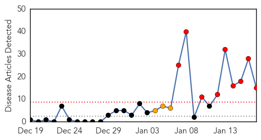

30 Day Trends
Web: 9 alerts, 3 warnings
Twitter: 0 alerts, 0 warnings
Top Articles:
- 0.991
- Measles pops up in outbreak linked to Disney parks
- 0.988
- Disneyland measles: Rapid spread concerns health officials
- 0.969
- California measles outbreak expands to 51 cases; more likely
- 0.969
- California measles outbreak expands to 51 cases; more likely
- 0.969
- California measles outbreak expands to 51 cases; more likely
- 0.962
- Measles Outbreak in Orange County Continues to Spread
- 0.949
- CA Measles Outbreak Widens
- 0.891
- 3rd Utah County resident tests positive for measles
- 0.857
- Six New OC Measles Cases Not Connected to Disneyland
- 0.846
- State measles cases prompt strong reminder for child vaccination
- 0.800
- Too rich to get sick? Disneyland measles outbreak reflects anti-vaccination trend
- 0.741
- Health Care in Eastern Ukrain Is On The Verge Of Collapse
- 0.702
- Sick privilege: Wealthy anti-vaxxers are driving outbreaks of deadly 19th century diseases
- 0.613
- WHO Warns: Health System On the Verge of Collapse in Eastern Ukraine
- 0.510
- Dhanbad hospital may close due to fund crisis, doctors' absence
Top Tweets:
-
No tweets found for Jan 17, 2015
Web/News Articles
Tweets